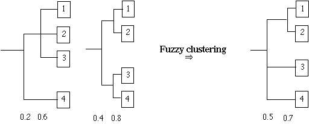

(29) Fuzzy Clustering Tool
Machine: PSI-II
Environment: SIMPOS
Language: ESP
Source Code 2 MB
Documents: None
Overview
An environment for making a clustering tree from merged multiple
similarity matrices.
Function
The knowledge merge algorithm for tree structure is often necessary in
the knowledge acquisition. This tool is a sub-module of the knowledge
acquisition support groupware: GRAPE. This tool merges the matrices of
the similarity values acquired from multiple users, and shows the
similarity tree constructed from the merged matrix. The user can input
similarity degree asynchronously because this tool merges them
incrementally. If the contradiction found between merged similarities,
the maximum similarity is adopted and connected as the branch.
Example of Merging The Clustering Trees

References
- H.Ueda et al. GRAPE: Knowledge acquisition support groupware for
the classificationchoice problem Proceedings of the Associated
Symposium of ETFA '92 on the Learning Process and Knowledge
Acauisition, 1992, (in printing).
- H.Ueda et al. The Methods to structurize the hypothesis for the
Knowledge Acquisition Support Groupware: GRAPE, Proc. of the The
11th Symposium on the intellgent system, 1990.
FTP
- Fuzzy Clustering Tool [406K]

www-admin@icot.or.jp